1 Грузы кабинета компании: создание и редактирование FEATURE FIX
Группа «Операции» кабинета компании (грузы · рейсы · доска · предложения) была почти только на чтение.
Компания могла смотреть грузы и принимать предложения, но создать груз не могла вовсе, а список
уходил на сервер без единого query-параметра — компания с 45 объявлениями видела серверные первые
20 как полный список. POST /v1/companies/:companyId/cargo и
PATCH …/cargo/:id есть в живой спецификации, но отсутствовали в
ENDPOINTS_COMPANY_V1.
Почему нельзя было просто переиспользовать форму диспетчера
src/pages/cargos/cargo-create/) жёстко привязана к
личности диспетчера — useGet/usePost/usePut +
ENDPOINTS_DISPATCHERS_V1, без шва для второй поверхности. Наивное переиспользование хуже,
чем отсутствие переиспользования: ни один из её ~14 запросов не входит в isPublicAuthUrl,
поэтому под /company/* они разрешились бы в authMode: 'dispatcher', а 401 там
заканчивается clearSessionAfterUnauthorized('dispatcher') → жёсткий
location.replace на диспетчерский вход — то есть выбросил бы пользователя компании
из его собственного рабочего пространства.
Решение — шов поверхности, а не форк, по образцу уже работающего переиспользования чата.
cargoFormSurface.ts описывает принимающую поверхность (режим авторизации, URL создания и
обновления, HTTP-глагол, ключи инвалидации, навигация после сохранения, поддержка видимости);
CargoFormSurfaceContext доносит это до листьев мастера (шаги и так берут общее состояние из
контекста, а не через пропсы). У диспетчера по умолчанию authMode остаётся
undefined, поэтому его запросы побайтово те же, что и до появления шва.

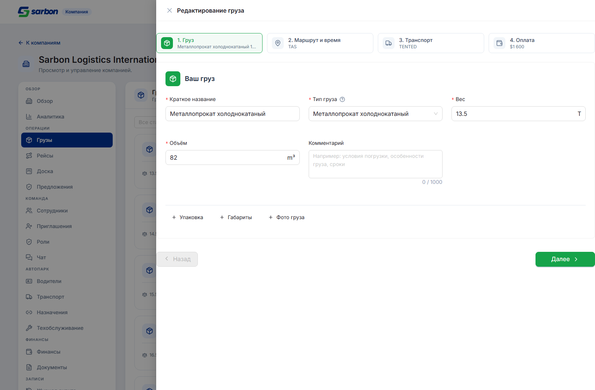
PATCH на company-scoped путь.Кто увидит груз — выбор только при создании
Создающий груз теперь выбирает аудиторию: все водители (SEARCHING_ALL — включая
водителей других компаний) или только моя компания (SEARCHING_COMPANY), отправляется
как desired_search_visibility. Предлагается всем, кто публикует от имени компании:
в кабинете компании и на /cargo-create, когда диспетчер переключился в контекст компании.
Диспетчер-фрилансер контрол не видит — бэкенд всё равно принудительно ставит all.
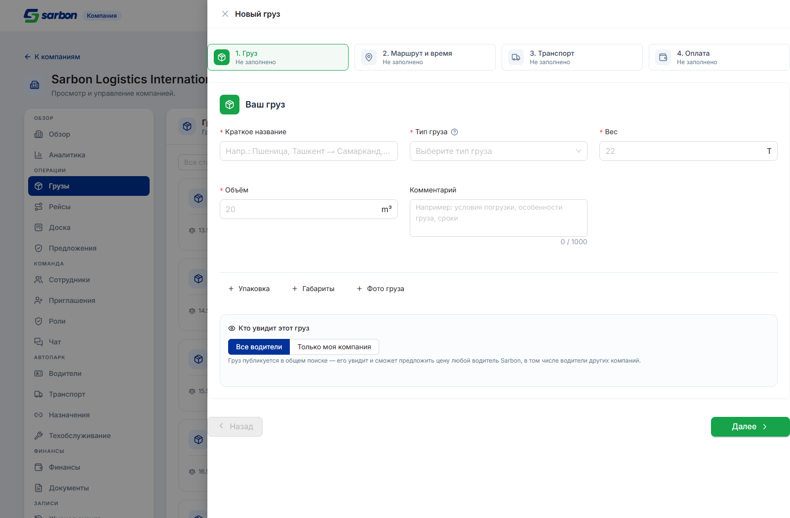
CargoUpdateRequest такого поля нет, а
единственный эндпоинт, переписывающий видимость постфактум, — легаси
PATCH /api/cargo/:id/status, диспетчерский маршрут, который отвергает токен компании голым
400 (воспроизведено на staging). Ранняя итерация этот вызов подключала, и её пришлось убрать:
кроме того что он никогда не срабатывал, он подсовывал в форму скрытое
desired_search_visibility: 'all' при каждом редактировании — так что сохранение постороннего
поля на грузе «На модерации» или «Деактивирован» запускало ложный переход статуса.
Запрос на бэкенд: company-scoped эндпоинт смены видимости уже созданного груза.
Список: настоящая пагинация и фильтры
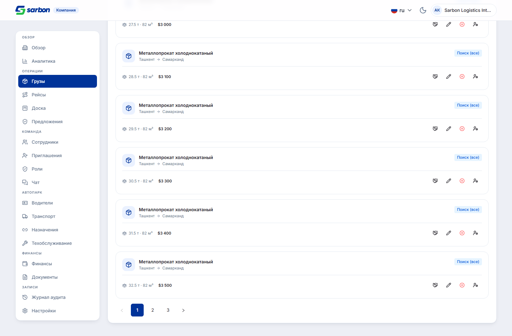
?limit=20&page=1&sort=created_at:desc (проверено перехватом запроса), плюс фасеты
status и assigned_manager_id.
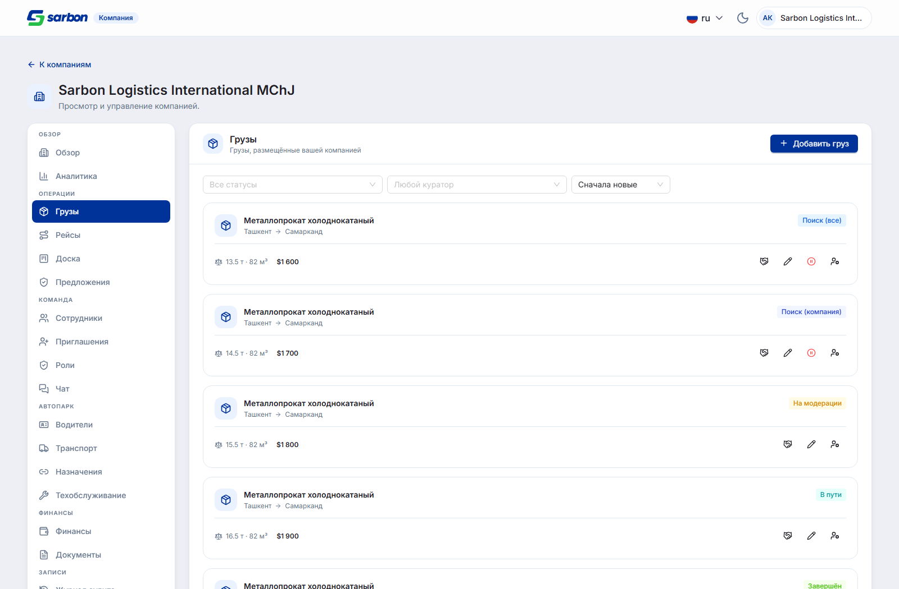
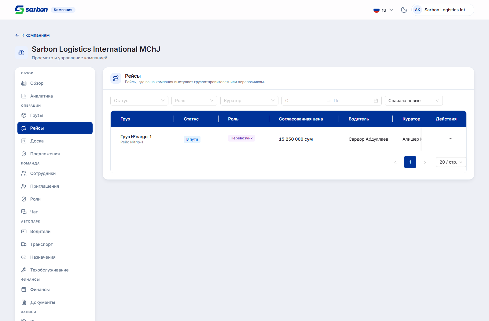
Заодно в том же проходе
- Карточки доски перестали быть инертными — карточка рейса ведёт в детали этого рейса через
одноразовый параметр
?trip=, который снимается после использования. - Колонка «Водитель» в предложениях была пуста для каждой строки, оформленной так, как её
документирует спецификация:
companyOffers.tsникогда не читал вложенныйcarrier.name. CargoFormне передавалcargoIdв первый шаг, поэтому путь редактирования пропускал гидратацию фотографий — поймано новым браузерным верификатором.board.cardStatus.*отсутствовал во всех 15 локалях и всегда падал в сырую enum-строку.CargoFormиспользовал статическийmessageAntD (предупреждающий при переключении темы) вместоApp.useApp().
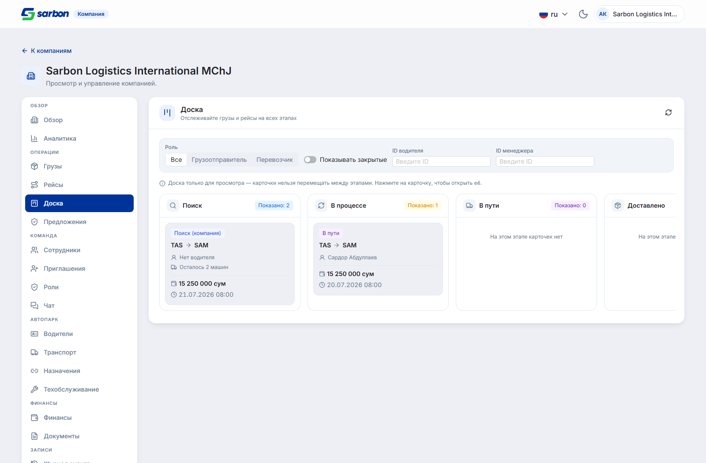
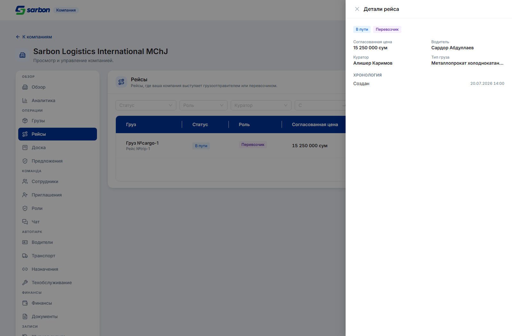
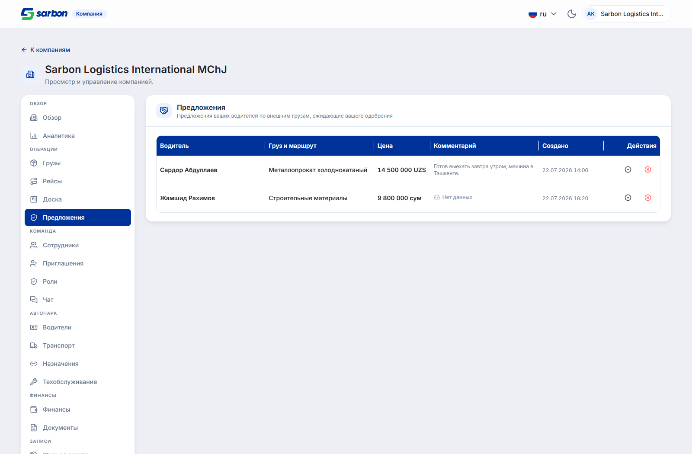
carrier.name. Обратите внимание на цены: первая
строка пришла с готовым price_text, вторая — только с числом, и теперь запасной путь
форматирует его как везде в продукте («9 800 000 сум»), а не печатает 9800000.
2 Визуальный прогон группы «Операции» UI
Перед сдачей — скриншот-прогон 4 вкладок × 3 ширины (1440 / 834 / 390) × 2 темы + состояния панелей = 32 снимка. Все шесть дефектов нашлись глазами, а не автоматическими проверками — ради этого прогон и существует.
| # | Что было | Корневая причина и починка |
|---|---|---|
| 1 High |
Заголовок «Действия» в рейсах рендерился по букве в строку, раздувая шапку таблицы до ~190 px сплошного тёмно-синего; «Согласованная цена» ломалась посреди слова | Сумма объявленных ширин колонок (1170 px) превышала scroll.x (1160) — AntD тогда сжимает каждую колонку ниже объявленной ширины, а русское слово без точек переноса ломается посимвольно. Подняли scroll.x выше реальной суммы + хелпер withNowrapHeaders(): одни ширины — хрупкая защита, требуемая ширина меняется от локали |
| 2 Medium |
Тег роли «Грузоотправитель» вываливался из колонки в цену | Колонка 110 → 160 px плюс truncate на теге, чтобы любая будущая более длинная роль обрезалась внутри своей ячейки |
| 3 Medium |
На карточках доски обрезалась именно цена | Цена конкурировала с полной меткой времени за одну строку в колонке 320 px — и проигрывала. Строка теперь переносится; на вторую строку уходит время, а не цена |
| 4 Low |
Одинаковые карточки обрезали маршрут по-разному: «Ташкент → Алматы» рядом с «Ташке… → Алма…» | Более длинный тег статуса соседней карточки отбирал ширину у маршрута на общей строке. Тег статуса перенесён над маршрутом |
| 5 Medium |
Две строки одной таблицы форматировали одну валюту по-разному: «14 500 000 UZS» и «9800000 UZS» | Бэкенд отдаёт price_text непоследовательно, а запасной путь подставлял сырое число. Оба хелпера цены теперь идут через общий formatPrice |
| 6 Low |
Группа действий на карточке груза уходила на 45 px за край карточки на 390 px | Найдено измерением правого края каждого элемента относительно вьюпорта: document.scrollWidth сам по себе это не ловит — предок с overflow:hidden прячет нарушителя |
3 Приглашение принимается прямо в ленте офферов FEATURE КОНТРАКТ
Вчерашний «вариант A» заставлял диспетчера, получившего приглашение в компанию, нажать «Открыть приглашение», получить OTP как company-user и пройти OTP → завершение регистрации → входящие приглашения, прежде чем приглашение можно было принять. Бэкенд выдал прямой приём, и весь этот крюк стал легаси.
POST /v1/dispatchers/invitations/{id}/accept— принимает приглашение на месте диспетчерским токеном, автоматически заводит личность company-user по телефону (снимок профиля диспетчера, роль пишется нейтрально, не OWNER) и возвращает пару токенов company-user +company_id/role. Телефон обязан совпадать с диспетчерским, иначе403 invitation_not_yours.POST …/decline— дешёвая смена состояния с проверкой телефона, без заведения личности.- На фронте: карточка приглашения переписана с одной кнопки на «Принять» + «Отклонить» на месте.
Приём → чистка кеша сессии +
setAuth(автовход, как в OTP-входе компании) → инвалидация ленты → переход в рабочее пространство присоединённой компании. 200 без пригодных токенов падает громко, а не оставляет полуприменённую сессию.
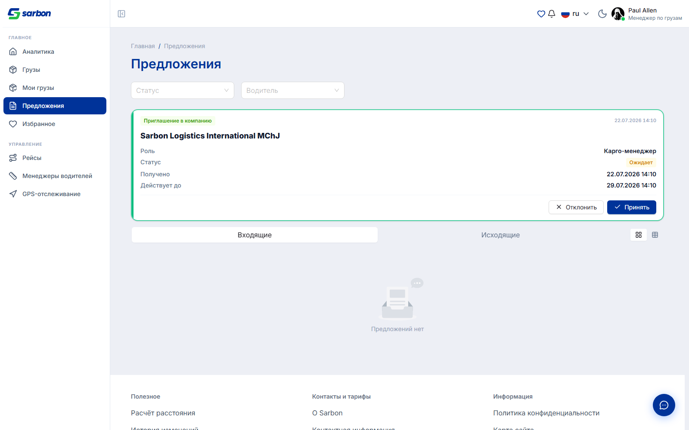
setAuth (секунды, не unix-мс), порядок «синхронизировать до
навигации» и блокировку двойной отправки. Одна реальная находка среднего уровня:
parseDispatcherInvitationAccept принимал пару токенов, у которой
expires_in/refresh_expires_in отсутствовали или были нечисловыми, подставляя
0 — а поскольку хранилище пишет срок как (сейчас + время жизни), ноль
превращался в уже прошедшую эпоху, а не в документированный сентинел «никогда не истекает». Первый
же запрос компании ушёл бы в обновление токена → отказ → clearAuth, и пользователя выбросило
бы на вход сразу после тоста об успехе. Парсер теперь падает закрыто.
4 Права роли читаются с сервера и переживают перезагрузку FEATURE КОНТРАКТ
Вчера вкладка «Роли» могла показывать только сессионные правки — API прав был только на запись,
и после успешного PUT все переключатели откатывались на «Не задано». Вчерашний обходной путь держал
сохранённое состояние до конца визита, но не переживал перезагрузку, повторное открытие вкладки,
переключение роли туда-обратно и не был виден другому администратору. Запрошенный вчера GET
выдан — GET /v1/companies/{companyId}/roles/{role}/permissions.
- Новый
parseRolePermissionOverlayразбирает ответ в картуpermission_key → allowed(терпим к обёртке/массиву, отбрасывает битые строки, нечисловойallowedникогда не приводится к булеву). - Кеш запроса стал единственным источником истины: сохранение и точечный откат патчат кеш
оптимистично через
setQueryData(тот же билдер, что уходит на сервер, — round-trip без потерь), затем инвалидируют ключ и сверяются с сервером. Сессионное состояниеappliedи его эффект-сеялка удалены целиком. - Что поймал обзор: состояние загрузки и ошибки нового GET нигде не показывалось — медленный или упавший запрос рисовал все права как «Не задано», неотличимо от роли без переопределений, и правку можно было начать с этой ложной пустоты. Теперь GET делит с секцией общий блок ошибки и повтора, а переключатели заблокированы до успешной загрузки.
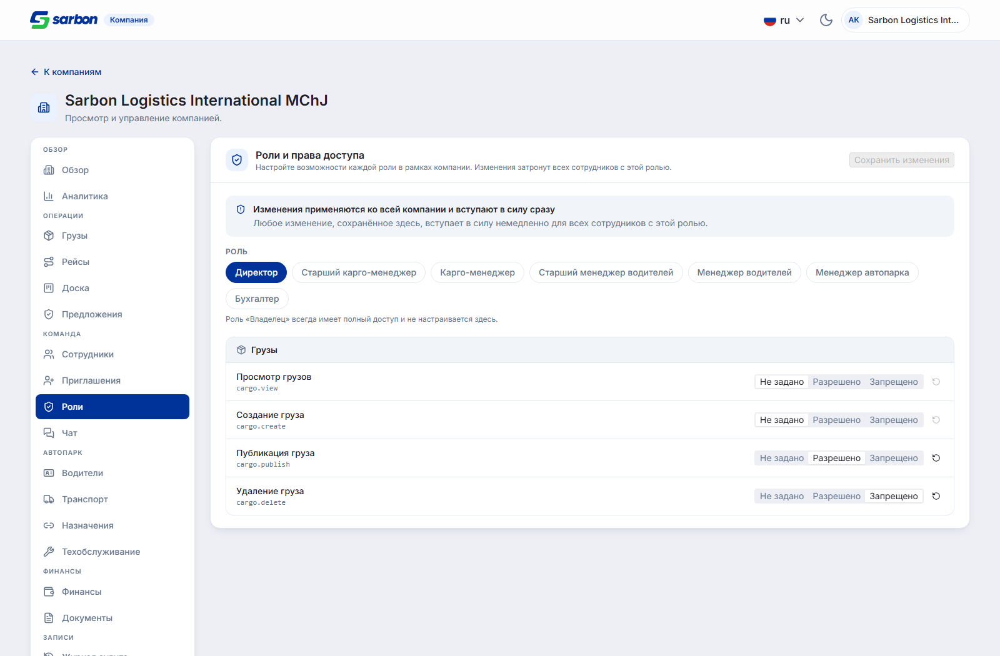
5 Ещё четыре правки авторизации компании FIX
| Что | Разбор |
|---|---|
| Голый 409 забирали себе два разных обработчика 11:12 |
И isCompanyAlreadyRegistered (завершение регистрации), и isCompanyInnTakenError (создание компании) проверяли только HTTP-статус. Любой 409 поэтому переклеивался: на завершении — тост «у вас уже есть аккаунт» и переход на вход с replace: true, теряя набранные имя и пароль и session_id из URL; на создании — «ИНН занят» на корректном ИНН, ошибка, которую нельзя убрать правкой поля. Новый isExpectedConflict(error, status, reasons): статус по-прежнему совпадает сам по себе, когда тело не называет причину, но 409 с другой причиной больше не матчится и падает в обычную ошибку на месте |
| Отсчёт компании стирал диспетчерский маркер 11:12 |
sarbon.otpFailedIdentifier — единственный общеприложенческий маркер за 60-секундным троттлингом повторных неудач, и пишут его только диспетчерские страницы. Когда истекал scoped отсчёт компании, хук стирал маркер всё равно — и следующая неудачная отправка на диспетчерском входе считалась первой и троттлинг пропускала. Теперь чистить его может только глобальный (безобластной) экземпляр |
| Полевые ошибки были недостижимы на завершении регистрации 10:55 |
onError проверял статусные ветки первыми и уходил в навигацию, поэтому 409 { data: { fields: { password: … } } } выбрасывал сообщение поля и уводил пользователя с формы, которую он мог исправить на месте. applyApiFieldErrors теперь идёт первым; редиректы не пострадали — их ответы fields не несут |
| Однословные коды ошибок протекали в интерфейс 10:55 |
Фильтр машинных кодов требовал разделителя (_/-/.) — правило намеренное, потому что узбекский пишется строчной латиницей и однословное bloklangan обязано доходить до пользователя. Но unauthorized, forbidden, conflict проходили фильтр и печатались как есть. Добавлен закрытый список однословных кодов — закрытый, а не «любое английское слово», чтобы локализованное сообщение никогда не подавлялось лишь за то, что оно короткое |
6 Удалён мёртвый барьер личностей REFACTOR
companyRegisterConflict.ts моделировал барьер бэкенда, которого больше не существует:
409 с data.reason: phone_belongs_to_dispatcher | phone_belongs_to_driver,
означавший, что телефон принадлежит другой личности Sarbon и company-user'ом стать не может. На него
ветвились две страницы, его текст несли два ключа × 15 локалей, его утверждал набор тестов.
purpose=register «принимается для
обратной совместимости, но больше ни на что не влияет (редизайн на Go убрал единственную проверку,
которая от него зависела)», а телефон или email, принадлежащий диспетчеру или водителю, «больше не
отклоняется». phone_belongs_to_* встречается в спецификации 0 раз. Единственный
оставшийся инвариант дубликата — 409 phone_already_registered. Заодно поправлен
CLAUDE.md, который всё ещё описывал барьер как живой — именно это вчера привело к переоценке
одной находки.
7 Выкладка в продакшен и возврат публичных входов РЕЛИЗ
Днём — слияние staging → main (PR #300). Перед пушем четыре публичных входа в раздел компании были
закомментированы, а не удалены (по прямому указанию: «скрыть, но не убивать»), с маркерами
«раскомментировать, чтобы вернуть»: ссылка в подвале, гостевой пункт в шапке и кросс-ссылки на страницах
входа и регистрации диспетчера. Сам раздел /company/* и /accept-invite
оставались доступны по прямой ссылке, как и карточка приглашения в офферах, переключатель контекста
нанятого диспетчера и админская модерация.
После выкладки все четыре входа возвращены обратно — восстановлены до версий, предшествовавших
скрытию; tsc -b подтверждает, что они по-прежнему типизируются поверх слитого рефакторинга
OTP-отсчёта.
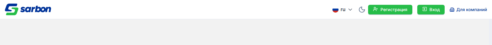
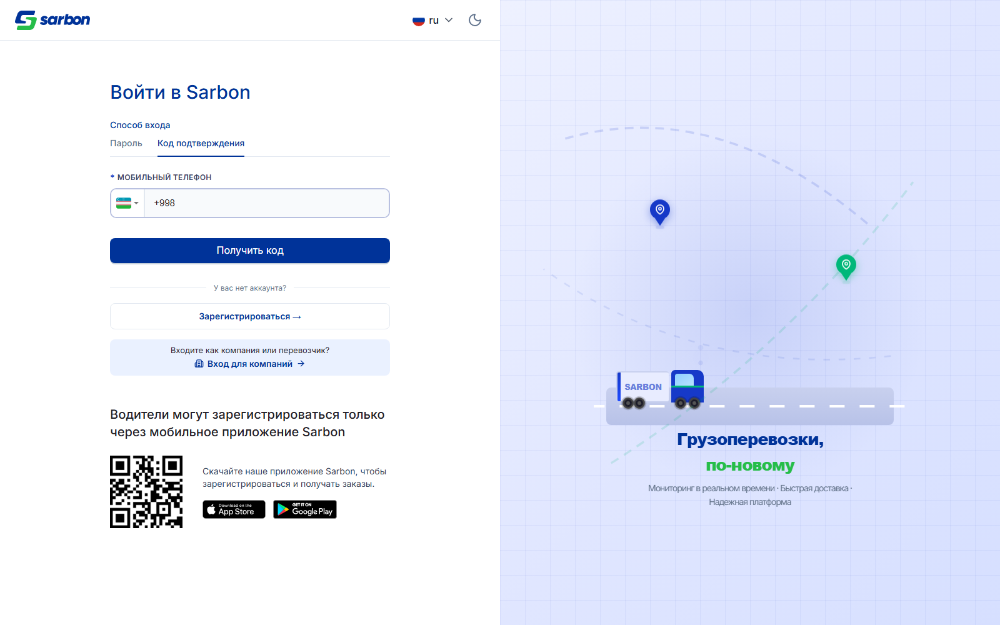
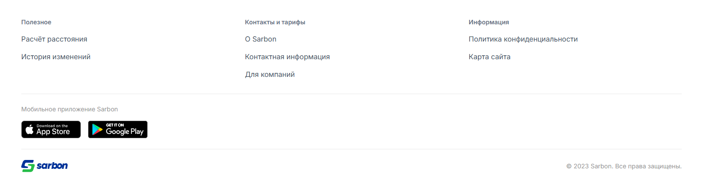
8 Утечка кеша между аккаунтами на общем устройстве HIGH
Найдена архитектурным аудитом сразу после слияния: та же ветка починила слои авторизации, создания, профиля и админки, но выложила только половину собственной находки §2.1 — область очистки кеша при входе и выходе осталась открытой.
clearCompanySessionQueries вызывается на каждом переходе сессии (вход /
подтверждение OTP / завершение регистрации / выход — 4 точки), но удалял 4 ключа из ~30: только
аккаунтные (AUTH_COMPANIES, PROFILE, COMPANY_BY_ID,
ME_PERMISSIONS). Ещё ~25 компанийно-скоупленных ключей рабочего пространства
(COMPANY_TRIPS, COMPANY_FINANCE_*, COMPANY_USERS,
COMPANY_DOCUMENTS, COMPANY_DRIVERS, COMPANY_INVITATIONS,
COMPANY_AUDIT, COMPANY_BOARD, …), ключёванных [key, companyId],
переживали переход под пятиминутным gcTime.
Сценарий отказа. Двое сотрудников одной компании за общим устройством: первый выходит, второй входит в ту же компанию — и первые ~60 секунд (
staleTime) видит закешированные данные
первого: рейсы, финансы, сотрудников, выданные под другие права.
Корневая причина. Список из 4 ключей, поддерживаемый вручную, который ни разу не догнал растущий enum из ~30. Починка: чистка по членству —
removeQueries({ predicate }) по
new Set(Object.values(QUERY_KEYS_COMPANY_V1)), так что вновь добавленный эндпоинт компании
не может молча ускользнуть от очистки. Проверена межпространственная безопасность: ключи уникальны между
диспетчером, админом и компанией, так что диспетчерские, админские и чатовые записи не задеты.
9 Архитектурный аудит после слияния ASSESS
Слияние company-surface-fixes сопоставлено с базой до слияния по 6 областям плюс структурный
аудит. Вердикт: слияние — настоящее улучшение, 0 регрессий.
- Починило несколько реальных багов базы: перевёрнутая проверка на
nullв разборе причины 409, из-за которой любой неизвестный конфликт классифицировался неверно; неразбираемый 200, оставлявший пользователя на форме создания; гейт поis_current, дававший неповторяемый 403; глобальный кросс-поверхностный OTP-отсчёт; попытки OTP, сгоравшие на транзиентных ошибках. - Улучшило разделение логики и представления: вынесены
companyActive.ts,companyAuthError.ts,companyOtpPurpose.ts,httpStatus.ts,authPhone.ts,otpCooldownStore.ts,companyProfile.ts— каждый со своим тестом рядом, по конвенции репозитория. - Новых структурных дыр нет: «36 неиспользуемых файлов» по knip — это отдельно стоящие скрипты
qa/*.mjs, артефакт конфигурации, а неsrc. - Одна открытая дыра высокого уровня найдена и закрыта — раздел 8 выше.
FinanceSection, 1233 строки — нужен
GUI-базлайн перед разбором), мёртвые заготовки (companyOtpChannels,
REFERENCE_COMPANY — ждут бэкенд) и переносимость qa/verify-*.mjs (жёстко
прошитый путь к скиллу, playwright не в зависимостях).
10 Проверки
| Проверка | Результат |
|---|---|
pnpm build (tsc -b + vite) | выход 0 |
eslint . --max-warnings 0 | чисто |
vitest (полный прогон на конец дня) | 192 файла / 2161 тест |
qa/verify-company-cargo-create.mjs (новый) | 22/22, 0 ошибок консоли |
qa/verify-company-workspace.mjs | 18/18 секций, 0 сырых ключей i18n |
qa/verify-company-invite-roles.mjs | выход 0 |
| Скриншот-прогон группы «Операции» | 32 снимка; переполнений 6 → 0, ошибок консоли 0 |
| Синхронизация локалей | 15/15 (+34 ключа на локаль в задаче по грузам, ни одного удалённого) |
| Диспетчерская форма груза не затронута | под застабленным стендом не проверялась — та же пустая отрисовка и у нетронутой страницы «Мои грузы», то есть ограничение стенда, а не регрессия; гарантия держится на типах, линте и юнит-тестах, утверждающих authMode: undefined, PUT /api/cargo/:id и отсутствие поля видимости в payload |
| Смена видимости у существующего груза | невозможна — нужен company-scoped эндпоинт (запрос на бэкенд) |
| Живой end-to-end приёма приглашения | не проверялся — нет тестового приглашения на staging; сервер остаётся источником истины по проверке телефона и гардам |
| Файлов затронуто | 58 в src/ и локалях (из них 8 новых модулей и 15 файлов локалей), 5 коммитов + 2 слияния + рабочее дерево |
Записей в bug.md | 9 за день |
qa/verify-company-cargo-create.mjs, qa/shoot-company-operations.mjs): у
поверхности владельца нет разделяемого тестового аккаунта, а живого приглашения на staging нет. Вход в
ленту офферов выполнен настоящей сессией диспетчера, застаблен только ответ ленты. Публичные экраны
(подвал, шапка, вход) — без стабов вовсе. Скрипты съёмки лежат рядом с отчётом
(take-company-ops.mjs, take-rest.mjs).